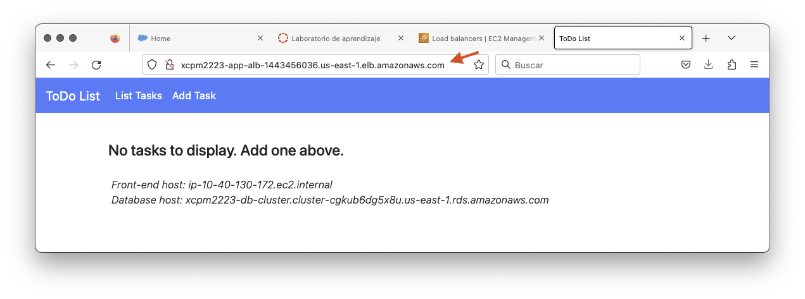

Paso 5: Configuración da capa de aplicación
Vamos agora configurar a alta dispoñibilidade e a escalabilidade na capa de aplicación. En concreto vamos configurar:
- Un grupo de destino
- Un balanceador de carga
- Un modelo de lanzamento
- Un grupo de autoescalamento
Imaxe: compoñentes da capa de aplicación.
Crea o grupo de destino
Vamos comezar por crear un grupo de destino para usar co balanceador de carga na nosa capa de aplicación. Fai o seguinte:
- No menú da consola de EC2 escolle a opción Grupos de destino.
-
Crea un grupo premendo no botón Crear grupo de destino e indica as opcións seguintes no asistente:
- Tipo de destino: Instancias
- Nome: dalle un nome precedido do teu prefixo e curso, p.e. xcpm2223-app-targetgroup
- Protocolo e porta: HTTP:80
- VPC: escolle a VPC que creaches para a arquitectura.
-
Acepta para crear o grupo sen rexistrar ningunha instancia.
Imaxe: propiedades do grupo de destino.
Crea o balanceador de carga
Para crear o balanceador fai o seguinte:
- No menú da consola de EC2 escolle a opción Balanceadores de Carga.
- Crea un balanceador de carga premendo no botón Crear balanceador de carga.
- Preme no botón Crear do tipo Balanceador de carga de aplicacións.
-
No asistente para crear un balanceador de carga de aplicacións indica as opcións seguintes:
- Nome: dalle un nome precedido do teu prefixo e curso, p.e. xcpm2223-app-alb
- Esquema: exposto a Internet. Consulta a documentación de AWS para ver cal é a diferenza cun balanceador interno.
Imaxe: configuración básica do balanceador.
- VPC: escolle a VPC que creaches para a arquitectura.
- Mapeamento: en cada unha das dúas AZ da nosa VPC, escolle a subrede pública. Os balanceadores expostos a Internet teñen que estar asociados con subredes que teñan o tráfico encamiñado a un gateway de Internet.
Imaxe: configuración de rede do balanceador.
- Grupo de seguridade: escolle o grupo de seguridade do balanceador de carga que creaches no paso de configuración da seguridade.
- Roteamento: escolle no listener HTTP:80 o grupo de destino que creaches anteriormente.
Imaxe: configuración de seguridade e listeners do balanceador.
-
Acepta para crear o balanceador.
Imaxe: propiedades do balanceador.
Crea o modelo de lanzamento
Unha vez configurado o balanceador de carga, vamos agora configurar o escalamento da nosa capa de aplicación. Comezaremos por crear un modelo de lanzamento que use a AMI que creamos previamente para a nosa aplicación. Fai o seguinte:
- No menú da consola de EC2, dentro do submenú Instancias, escolle a opción Modelos de lanzamento.
-
Crea un novo modelo premendo no botón Crear modelo de lanzamento indicando as opcións seguintes:
- Nome: dalle un nome precedido do teu prefixo e curso, p.e. xcpm2223-app-launchcfg
- Descrición: escribe unha descrición para o teu modelo.
- Orientación sobre o Autoscaling: activa a opción para que o asistente nos avise se algo non está ben configurado para poder usar o modelo co autoescalamento de EC2.
- AMI: escolle a AMI da aplicación que creaches no paso de configuración da aplicación.
- Tipo de instancia: t2.micro
- Par de chaves: escolle NON engadilas ao modelo.
- Subrede: escolle NON engadila no modelo.
- Grupo de seguridade: escolle o grupo de seguridade da capa de aplicación.
- Detalles avanzados: escolle o perfil de instancia IAM LabInstanceProfile, que xa está predefinido no laboratorio de AWS Academy.
Imaxe: parte da configuración do modelo de lanzamento.
-
Acepta para crear o modelo de lanzamento.
Imaxe: propiedades do modelo de lanzamento.
Crea o grupo de autoescalamento
Para finalizar este paso, vamos agora crear o grupo de escalamento a partir do modelo de lanzamento. Fai o seguinte:
- Selecciona o modelo de lanzamento que ves de crear e no menú de accións do modelo escolle a opción Crear grupo de autoescalamento.
-
No asistente para crear o grupo indica as seguintes opcións:
- Nome: dalle un nome precedido do teu prefixo e curso, p.e. xcpm2223-app-scaling
- Modelo de lanzamento: comproba que xa aparece configurado o modelo que creaches previamente.
- Rede: escolle a VPC que creaches para a arquitectura e as subredes privadas que se crearon para a capa de aplicación.
Imaxe: configuración da rede no grupo de escalamento.
- Balanceador de carga: escolle a opción de xuntar a un balanceador de carga existente e escolle o grupo de destino do balanceador que creaches anteriormente.
Imaxe: configuración do balanceamento da carga no grupo de escalamento.
- Comprobación de estado: activa a opción para monitorar as instancias desde o balanceador.
Imaxe: configuración da comprobación de estado no grupo de escalamento.
- Tamaño do grupo: configura a capacidade desexada e a mínima a 1, e a máxima a 2.
- Políticas de escalabilidade: non vamos definir ningunha polo dagora.
Imaxe: configuración do tamaño e as políticas no grupo de escalamento.
-
Acepta para crear o grupo deixando o resto das opcións ao seu valor por defecto. Ao crearse o grupo, este vai iniciar tamén o número de instancias que indicamos na capacidade desexada (neste caso 1).
Imaxe: propiedades do grupo de escalamento.
- Comproba que a instancia apareza tamén como destino rexistrado no grupo de destino do balanceador de carga.
Imaxe: instancia rexistrada no grupo de destino.
Comproba a aplicación
Para realizar a comprobación inicial de que a arquitectura está correctamente configurada, fai o seguinte:
- Abre nun navegador a páxina da aplicación usando o nome DNS do balanceador de carga. Se todo está correcto, abrirase a páxina da aplicación amosando que a listaxe de tarefas pendentes está baleira.
 Imaxe: páxina da aplicación sen tarefas pendentes.
- Engade algunhas tarefas. Lembra poñer o teu prefixo e o curso actual diante dos nomes das tarefas.
Imaxe: páxina da aplicación coa listaxe de tarefas pendentes.
Importante
Para evitar que o grupo de autoescalamento poda manter instancias en execución cando saias da sesión do laboratorio de AWS Academy, lembra modificar o tamaño do grupo poñendo a cero a capacidade desexada, o mínimo e o máximo antes de pechar a sesión. Cando volvas iniciar sesión no laboratorio terás que volver configurar os valores orixinais.